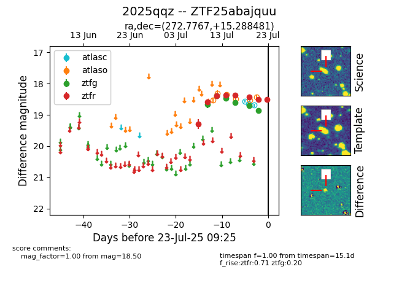

Target ZTF25abajquu at 2025-07-23 12:37, see:
FINK: fink-portal.org/ZTF25abajquu
Lasair: lasair-ztf.lsst.ac.uk/objects/ZTF25abajquu
ALeRCE: alerce.online/object/ZTF25abajquu
TNS: wis-tns.org/object/2025qqz
YSE: ziggy.ucolick.org/yse/transient_detail/2025qqz
alt names
ZTF25abajquu (ztf,fink)
2025qqz (tns,yse)
coordinates:
equatorial (ra, dec) = (272.7767,+15.28848)
galactic (l, b) = (42.3579,+15.69587)
photometry
last atlasc=18.69, atlaso=18.44, ztfg=18.86, ztfr=18.50
3 atlasc, 6 atlaso, 6 ztfg, 8 ztfr detections
